<!-- Navigation bottom -->
<nav id="navigation-bottom">

    <a class="navigation-item waves-effect waves-light" onclick="navigateTo('user-anthropometric-data', event)" href="">
        
    </a>

    <a class="navigation-item waves-effect waves-light" onclick="navigateTo('dietary-prescription', event)" href="">
        
    </a>

    <a class="navigation-item waves-effect waves-light" onclick="navigateTo('grocery-list', event)" href="">
        
    </a>

    <a class="navigation-item waves-effect waves-light" onclick="navigateTo('nutritional-recipes', event)" href="">
        
    </a>

    <a class="navigation-item waves-effect waves-light" onclick="navigateTo('replacement-list', event)" href="">
        
    </a>

    <a class="navigation-item waves-effect waves-light" onclick="navigateTo('nutritional-orientation', event)" href="">
        
    </a>

</nav>